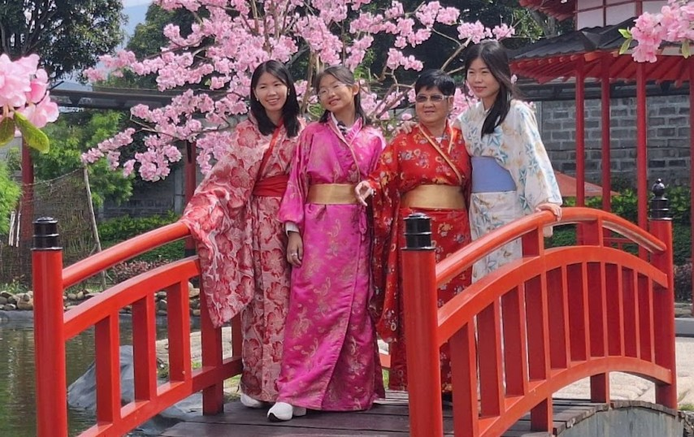

Wahana panahan (Fun Archery) memungkinkan pengunjung mencoba sensasi
menjadi pemanah dengan target yang tersedia. Selain itu, setelah
puas memanah, pengunjung dapat memberi makan bebek, merpati, dan
ikan di area yang sama.
2. Shoot The Moo
Foto dari Mini Mania
Wahana "Shoot the Moo" di Mini Mania Lembang adalah wahana permainan
menembak yang menargetkan target berbentuk sapi. Cocok bagi
pengunjung yang suka tantangan!
3. Sakura River Cruise
Foto dari Mini Mania
Wahana perahu menyusuri sungai buatan sambil menikmati keindahan
bunga sakura. Disediakan juga penyewaan kimono untuk nuansa Jepang
yang lebih terasa.
4. Costume Rental

Foto dari Mini Mania
Pengunjung dapat menyewa kimono dan berfoto di spot Instagramable
dengan latar miniatur dunia. Menambah kesan otentik ala Jepang saat
berkunjung ke Mini Mania.